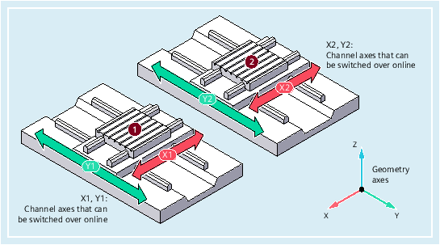
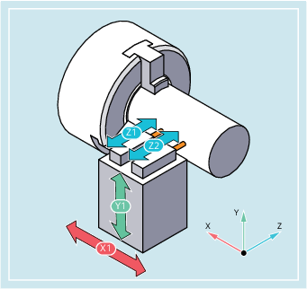

Using function "Switchable geometry axes", it is possible to remove channel axes of the configured geometry axis group from the part program and replace them by other channel axes. The function is used for machine kinematics with parallel axes
Example for machine kinematics with parallel axes
| Predefined procedure to switch over geometry axes | ||
| Number of the geometry axis that is to be replaced by the specified channel axis | ||
Range of values: | 0, 1, 2, 3 | ||
Value: | 0 | The specified channel axis is removed from the geometry axis group without being replaced | |
1 | 1st geometry axis ≙ coordinate axis X (abscissa) of the WCS | ||
2 | 2nd geometry axis ≙ coordinate axis Y (ordinate) of the WCS | ||
3 | 3rd geometry axis ≙ coordinate axis Z (applicate) of the WCS | ||
| Name of the channel axis that should be included in the geometry axis group | ||
| GEOAX() without a parameter being specified reactivates the basic configuration of the geometry axes parameterized in the machine data. | ||
A tool slide can be traversed using channel axes X1, Y1, Z1, Z2:
The geometry axes are configured so that after powering-up, initially Z1 is effective as 3rd geometry axis under the geometry axis name "Z" and together with X1 and Y1 forms the geometry axis group.
Axes Z1 and Z2 should now be used, alternating, as geometry axis Z in the part program:
| Program code | Comment |
|---|---|
| ... | |
| N100 GEOAX(3,Z2) | ; Channel axis Z2 acts as 3rd geometry axis (Z) |
| N110 G1 ... | |
| N120 GEOAX(3,Z1) | ; Channel axis Z1 acts as 3rd geometry axis (Z) |
| ... |
A machine has six channel axes with the names XX, YY, ZZ, U, V, W.
The basic setting of the geometry axis configuration via machine data is:
Channel axis XX = 1st geometry axis (X axis)
Channel axis YY = 2nd geometry axis (Y axis)
Channel axis ZZ = 3rd geometry axis (Z axis)
| Program code | Comment |
|---|---|
| N10 GEOAX() | ; The basic configuration of the geometry axes is effective. |
| N20 G0 X0 Y0 Z0 U0 V0 W0 | ; All axes in rapid traverse to position 0. |
| N30 GEOAX(1,U,2,V,3,W) | ; Channel axis U becomes the first (X), V the second (Y) ; and W the third geometry axis (Z). |
| N40 GEOAX(1,XX,3,ZZ) | ; Channel axis XX becomes the first (X), ZZ the third; geometry axis (Z). Channel axis V remains the second; geometry axis (Y). |
| N50 G17 G2 X20 I10 F1000 | ; Full circle in the X/Y plane. Channel axes ; XX and V traverse. |
| N60 GEOAX(2,W) | ; Channel axis W becomes the second geometry (Y). |
| N80 G17 G2 X20 I10 F1000 | ; Full circle in the X/Y plane. Channel axes ; XX and W traverse. |
| N90 GEOAX() | ; Reset to the initial state. |
| N100 GEOAX(1,U,2,V,3,W) | ; Channel axis U becomes the first (X), V the second ; (Y) and W the third geometry axis (Z). |
| N110 G1 X10 Y10 Z10 XX=25 | ; Channel axes U, V, W each traverse to ; Position 10. XX as special axis traverses to position 25. |
| N120 GEOAX(0,V) | ; V is removed from the geometry axis group. ; U and W remain the first (X) and third ; geometry axis (Z). ; The second geometry (Y) axis remains unassigned. |
| N130 GEOAX(1,U,2,V,3,W) | ; Channel axis U remains the first (X), V becomes ; the second (Y), W remains the third geometry axis (Z). |
| N140 GEOAX(3,V) | ; V becomes the third geometry axis (Z), whereby W ; is overwritten and therefore removed from the geometry ; axis group. The second geometry axis (Y) ; still remains unassigned. |
See also:
Replaceable geometry axes (GEOAX): Further Information